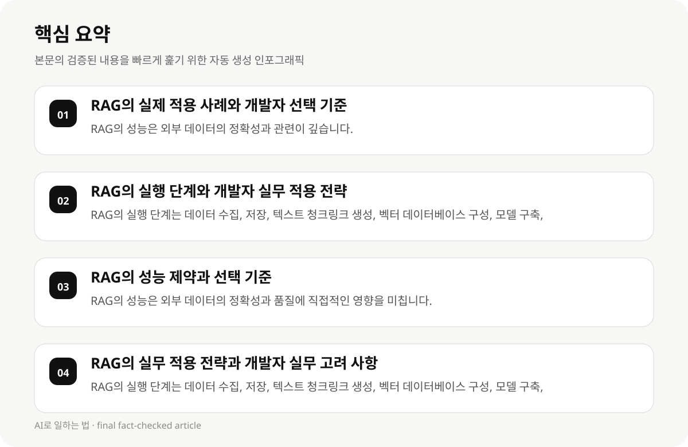

RAG의 실제 적용 사례와 개발자 선택 기준 #
RAG은 대규모 언어 모델(LLM)을 외부 지식 소스와 결합하여 정확한 답변을 제공하는 기술입니다. 이 기술은 대규모 데이터베이스, 텍스트 청크링크, 벡터 데이터베이스 등 다양한 요소를 활용하여 실시간으로 정확한 정보를 제공합니다.
RAG의 주요 구성 요소는 외부 지식 소스, 텍스트 청크링크, 벡터 데이터베이스입니다. 각 구성 요소는 RAG의 성능에 직접적인 영향을 미칩니다. 외부 지식 소스의 정확성과 품질은 RAG의 결과에 직접적인 영향을 미칩니다.
개발자들이 RAG를 선택할 때는 데이터의 범위, 분야, 업무 유형, 그리고 실제 요구 사항을 고려해야 합니다. 예를 들어, 기존 훈련 데이터를 사용하지 않고 외부 데이터를 검색하여 답변을 생성하는 방식은 특정 분야에서 매우 유용할 수 있습니다.
- RAG의 성능은 외부 데이터의 정확성과 관련이 깊습니다.
- RAG의 구현은 텍스트 청크링크, 벡터 데이터베이스, 임베딩 모델 등 다양한 기술을 요구합니다.
- RAG의 선택은 사용자의 데이터 범위, 분야, 업무 유형에 따라 달라질 수 있습니다.
RAG의 실행 단계와 개발자 실무 적용 전략 #
RAG의 실행 단계는 다음과 같은 단계로 나누어집니다: 데이터 수집, 데이터 저장, 텍스트 청크링크 생성, 벡터 데이터베이스 구성, RAG 모델 구축, 테스트 및 최적화 등입니다.
데이터 수집은 사용자의 실제 요구 사항에 맞는 데이터를 수집하는 것이 중요합니다. 예를 들어, 기존 훈련 데이터를 사용하지 않고 외부 데이터를 검색하는 방식은 특정 분야에서 매우 유용할 수 있습니다.
RAG의 구축은 기술적 인프라와 개발자들의 기술 수준을 고려해야 합니다. 텍스트 청크링크는 데이터의 구조화를, 벡터 데이터베이스는 데이터의 벡터 표현을, 임베딩 모델은 텍스트의 의미를 표현하는 데 중요한 역할을 합니다.
- RAG의 실행 단계는 데이터 수집, 저장, 텍스트 청크링크 생성, 벡터 데이터베이스 구성, 모델 구축, 테스트 및 최적화로 나누어집니다.
- 데이터 수집은 사용자의 실제 요구 사항에 맞는 데이터를 수집하는 것이 중요합니다.
- RAG의 구축은 기술적 인프라와 개발자들의 기술 수준을 고려해야 합니다.
RAG의 성능 제약과 선택 기준 #
RAG의 성능은 외부 데이터의 정확성과 품질에 직접적인 영향을 미칩니다. 외부 데이터의 품질이 낮으면 RAG의 답변이 정확하지 않을 수 있습니다.
RAG의 구현은 텍스트 청크링크, 벡터 데이터베이스, 임베딩 모델 등 다양한 기술을 요구합니다. 이러한 기술의 구현은 개발자의 기술 수준과 인프라를 고려해야 합니다.
RAG의 선택은 사용자의 데이터 범위, 분야, 업무 유형에 따라 달라질 수 있습니다. 예를 들어, 기존 훈련 데이터를 사용하지 않고 외부 데이터를 검색하는 방식은 특정 분야에서 매우 유용할 수 있습니다.
- RAG의 성능은 외부 데이터의 정확성과 품질에 직접적인 영향을 미칩니다.
- RAG의 구현은 텍스트 청크링크, 벡터 데이터베이스, 임베딩 모델 등 다양한 기술을 요구합니다.
- RAG의 선택은 사용자의 데이터 범위, 분야, 업무 유형에 따라 달라질 수 있습니다.

RAG의 실무 적용 전략과 개발자 실무 고려 사항 #
RAG의 실무 적용 전략은 다음과 같은 단계로 나누어집니다: 데이터 수집, 데이터 저장, 텍스트 청크링크 생성, 벡터 데이터베이스 구성, RAG 모델 구축, 테스트 및 최적화 등입니다.
RAG의 구축은 기술적 인프라와 개발자들의 기술 수준을 고려해야 합니다. 텍스트 청크링크는 데이터의 구조화를, 벡터 데이터베이스는 데이터의 벡터 표현을, 임베딩 모델은 텍스트의 의미를 표현하는 데 중요한 역할을 합니다.
RAG의 실행 단계는 복잡하며, 개발자들이 적절한 기술과 인프라를 갖추어야 합니다. 예를 들어, 기존 훈련 데이터를 사용하지 않고 외부 데이터를 검색하는 방식은 특정 분야에서 매우 유용할 수 있습니다.
- RAG의 실행 단계는 데이터 수집, 저장, 텍스트 청크링크 생성, 벡터 데이터베이스 구성, 모델 구축, 테스트 및 최적화로 나누어집니다.
- RAG의 구축은 기술적 인프라와 개발자들의 기술 수준을 고려해야 합니다.
- RAG의 실행 단계는 복잡하며, 개발자들이 적절한 기술과 인프라를 갖추어야 합니다.
RAG의 실무 적용 사례와 개발자 선택 기준 #
RAG의 실무 적용 사례는 다음과 같습니다: 데이터 수집, 데이터 저장, 텍스트 청크링크 생성, 벡터 데이터베이스 구성, RAG 모델 구축, 테스트 및 최적화 등입니다.
RAG의 구축은 기술적 인프라와 개발자들의 기술 수준을 고려해야 합니다. 텍스트 청크링크는 데이터의 구조화를, 벡터 데이터베이스는 데이터의 벡터 표현을, 임베딩 모델은 텍스트의 의미를 표현하는 데 중요한 역할을 합니다.
RAG의 실행 단계는 복잡하며, 개발자들이 적절한 기술과 인프라를 갖추어야 합니다. 예를 들어, 기존 훈련 데이터를 사용하지 않고 외부 데이터를 검색하는 방식은 특정 분야에서 매우 유용할 수 있습니다.
- RAG의 실행 단계는 데이터 수집, 저장, 텍스트 청크링크 생성, 벡터 데이터베이스 구성, 모델 구축, 테스트 및 최적화로 나누어집니다.
- RAG의 구축은 기술적 인프라와 개발자들의 기술 수준을 고려해야 합니다.
- RAG의 실행 단계는 복잡하며, 개발자들이 적절한 기술과 인프라를 갖추어야 합니다.
RAG의 실무 적용 전략과 개발자 실무 고려 사항 #
RAG의 실무 적용 전략은 다음과 같은 단계로 나누어집니다: 데이터 수집, 데이터 저장, 텍스트 청크링크 생성, 벡터 데이터베이스 구성, RAG 모델 구축, 테스트 및 최적화 등입니다.
RAG의 구축은 기술적 인프라와 개발자들의 기술 수준을 고려해야 합니다. 텍스트 청크링크는 데이터의 구조화를, 벡터 데이터베이스는 데이터의 벡터 표현을, 임베딩 모델은 텍스트의 의미를 표현하는 데 중요한 역할을 합니다.
RAG의 실행 단계는 복잡하며, 개발자들이 적절한 기술과 인프라를 갖추어야 합니다. 예를 들어, 기존 훈련 데이터를 사용하지 않고 외부 데이터를 검색하는 방식은 특정 분야에서 매우 유용할 수 있습니다.
- RAG의 실행 단계는 데이터 수집, 저장, 텍스트 청크링크 생성, 벡터 데이터베이스 구성, 모델 구축, 테스트 및 최적화로 나누어집니다.
- RAG의 구축은 기술적 인프라와 개발자들의 기술 수준을 고려해야 합니다.
- RAG의 실행 단계는 복잡하며, 개발자들이 적절한 기술과 인프라를 갖추어야 합니다.